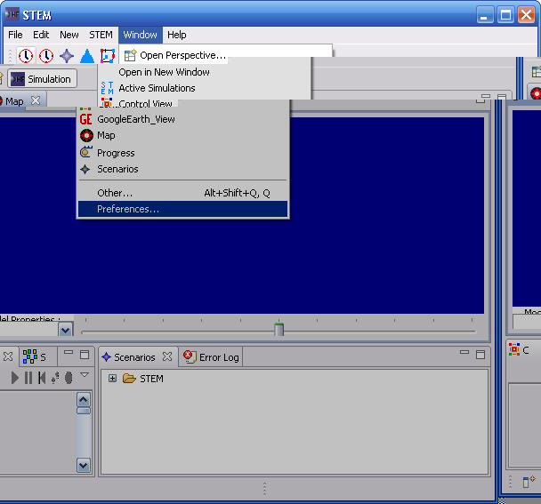
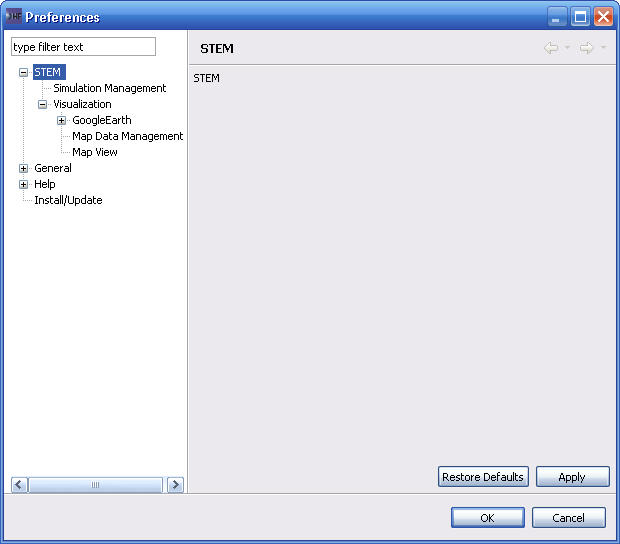

STEM has a number of preferences that can be specified that specify configuration information or control how Simulations execute or are displayed. Preferences are accessed through the "Windows->Preferences..." menu. 
This opens the preferences dialog. Selecting various elements under "STEM" in the tree display on the left, displays the corresponding interface for setting preferences on the right.